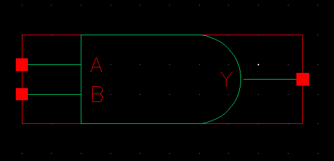
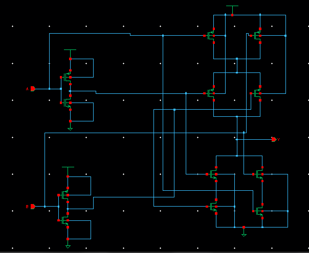
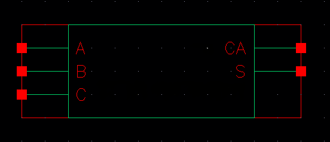

Sentence Detector for Monophone Model
Schematic Diagram of NOT Gate

Symbol of NOT Gate

Schematic Diagram of NAND Gate

Symbol of NAND Gate

Making AND Gate using NAND Gate & NOT Gate

Symbol of AND Gate

Schematic Diagram of OR Gate

Symbol of AND Gate

Results saved in "ResultFormat2.mat" file
Results saved in "ResultFormat3.fig" file
Start

End
Results saved in "ResultFormat1.txt" file
Results saved in "ResultFormat2.mat" file

Results saved in "ResultFormat3.fig" file
Results saved in "ResultFormat3.fig" file